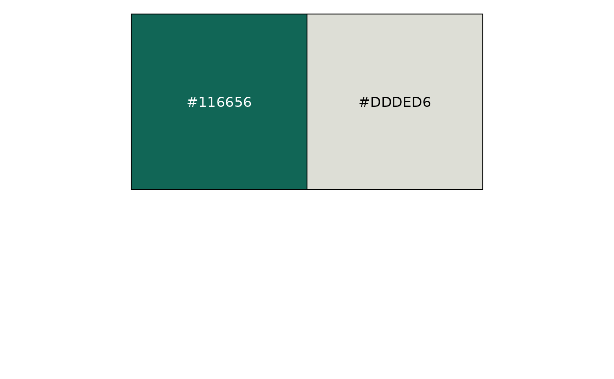
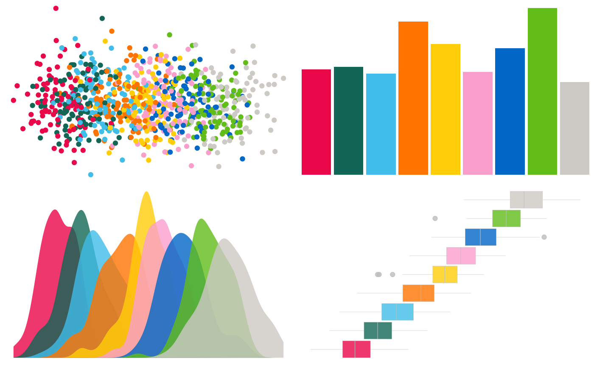

This package includes several ggplot themes and palettes for creating plots with MPI custom design.
Color Palette
This palette was inspired by the CD manual (available ) of the Max Planck Society.
Max-Planck institute has a standard style for document design. You can find CD manual . The two main colors in this document are green (Pantone 328) and gray (Pantone 427). The Pantone color system is a standardized color matching system, which is widely used. Below we can see traditional two main colors in Max-Planck society.

To find a color palette, Some colors are chosen from the Pantone list that is different from the two main colors. Color selection is a process in progress.
scales::show_col(palette_mpi(),ncol = 3)
set_color_theme()
k = 9
df1 = data.frame(x = rnorm(100*k), y = rnorm(100*k),type = letters[1:k]) %>%
mutate(x = x+ as.integer(as.factor(type)))
df2 = data.frame(y = abs(rnorm(k))+2,x = letters[1:k])
point_plot <- ggplot(df1, aes(x=jitter(x), y=jitter(y), col=type)) +
geom_point() +
theme_void()+
theme(legend.position = "none")
bar_plot <- ggplot(df2, aes(x=x, y=y, fill=x)) +
geom_bar(stat="identity") +
theme_void()+
theme(legend.position = "none")
density_plot <- ggplot(df1, aes(x=x, fill=type)) +
geom_density(alpha = 0.8,color = "transparent") +
theme_void()+
theme(legend.position = "none")
box_plot <- ggplot(df1, aes(x=x, fill=type)) +
geom_boxplot(alpha = 0.8,size = 0.1,color = "gray") +
theme_void()+
theme(legend.position = "none")
# Display this figure:
library(grid)
gridExtra::grid.arrange(point_plot,bar_plot,density_plot,box_plot,ncol = 2)
A continuous palette can be seen in the example below.
if (!require(hexbin)) install.packages('hexbin')
df <- data.frame(
x = rnorm(10000),
y = rnorm(10000)
)
ggplot(df, aes(x, y)) +
geom_hex() +
coord_fixed() +
theme_void()+
bottom_legend()Theme
The major goal of the theme was to keep things simple so that you could concentrate on the data. As a result, the chart’s components, such as the axes, are smaller and less eye - catching.
k = 5
df1 = data.frame(x = rnorm(100*k), y = rnorm(100*k),type = letters[1:k]) %>%
mutate(x = x+ as.integer(as.factor(type)))
ggplot(df1,aes(x = x, fill = type)) +
geom_density(col = "transparent",alpha = 0.7) +
labs(x = "X Value",y = "Density")